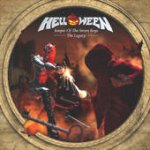

|
|
||
Helloween : Keeper of the Seven Keys - The Legacy (2005) |
|

http://www.helloween.org |
CD 1 |
8.6/10 |
|
Tras unos dos años tenemos un nuevo disco de Helloween, y esta vez es un disco doble cuyo título nos suena de algo ¿no? Con un nuevo batería, Dani Löble, y sin otros cambios respecto a la alineación que formaron para el disco anterior, Rabbit don't come easy, la banda ha hecho un esfuerzo significativo grabando 13 temas, un total de algo más de 77 minutos, para en cierta forma homenajear a los que son los dos discos más recordados de Helloween, los Keeper of the Seven Keys I y II. En este disco hay dos temas muy largos y épicos, que abren cada uno de los dos CDs y que son "The king for a 1000 years" y "Occasion avenue". En el primero y tras una suave introducción las guitarras irrumpen con fuerza en un contundente riff metalero que marca los momentos más cañeros de esta variada canción, con cambios de ritmo, pasajes melódicos, coros épicos y un enorme estribillo. El segundo empieza con una radio cambiando de emisora, en clara referencia a sus discos más clásicos, y una intro de bajo sobre la que se desarrolla una atmósfera inquietante que se ilumina en el estribillo principal, gracias a la voz de Andi Deris, pero que sigue presente en los tétricos coros en latín e incluso en las parte más suaves y melódicas. En suma, que aunque es difícil hacer canciones largas que no sean repetitivas y acaben resultando aburridas, Helloween lo ha conseguido dos veces en este álbum con este par de temazos. Hay muchas otras cosas buenas en el disco, como los pegadizos estribillos de "The invisible man", de "Born on judgement day", atentos al demoledor doble bombo de esta canción y a la preciosa melodía, e incluso el de "Pleasure Drone". "Mrs. God" es un tema que merece una mención aparte por el sentido del humor que destilan tanto su letra como la curiosa guitarra que lleva al principio la melodía, el armonioso y fantástico estribillo, el original solo de guitarra, tocado con un slide, y el divertido video musical que sirvió de presentación a este disco. También se pueden mencionar positivamente el estribillo de "Light the Universe", balada cantada con la colaboración de Candice Night, la original melodía y el ritmo de "Come Alive", otro llamativo estribillo en "Shade in the Shadow" y las partes más melódicas de "My life for one more day". Obviamente este disco no suena como los Keeper... originales. Sin Michael Kiske a la voz y sin Kai Hansen componiendo y a la guitarra eso es imposible. Quizás tampoco hacían falta dos CDs. Hay dos o tres canciones que se podían haber quedado fuera sin perjudicar para nada el resultado final, y lo demás cabía perfectamente en uno. Pero el resultado final es muy bueno: lo mejor que ha hecho Helloween en mucho tiempo. |
||
- Crítica escrita por Rubén Béjar - |
||